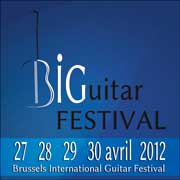

Autres
- les archives - ...des autres choses...
Pour conserver une trace des événements passés voici cette page ou sont archivées diverses choses ...
CD's
des artistes à découvrir
Alain Everts
2 CD que vous devez avoir dans votre collection des grands guitaristes du moment
... et nous attendons avec impatience le 3ème !
Javier Conde
jeune virtuose de la guitare Flamenco : l'exceptionnel concert de la biennale de la dance Lyon 2006
Year
:
2006
Karim Baggili
oud, guitare, Karim voyage entre flamenco et autres inspirations
Year
:
2005
José Toral
un moment dans les sonorités d'Andalousie, à écouter, à savourer quand la guitare flamenco voyage vers l'Inde
Artistes :
Les Artistes
BRUSSELS INTERNATIONAL GUITAR FESTIVAL
nous avons le plaisir de vous annoncer la deuxième édition du " BIGuitar FESTIVAL "
... l'événement à Bruxelles du vendredi 26 au mardi 30 avril 2013 !
BRUSSELS INTERNATIONAL GUITAR FESTIVAL
... l'événement à Bruxelles du vendredi 26 au mardi 30 avril 2013 !
L’unique rendez-vous annuel des aficionados de la guitare dans la capitale de l’Europe souffle sa deuxième bougie. Après le franc succès de l’année dernière, c’est dans un tout nouveau décor en plein cœur de Bruxelles, l' ESPACE MAGH, que l’édition 2013 propose des concerts,
des masterclasses, des conférences, un salon de lutherie mais aussi la création du “Concours Nicolas Alfonso” pour célébrer le centenaire de la naissance du virtuose espagnol.
Durant cinq jours, des artistes de renommée internationale, certains pour la première fois en Belgique, déclineront la guitare en solo, duo, trio, quatuor, ensemble, avec flûte, violon ou orchestre de chambre.
Latine, baroque, classique, romantique, espagnole ou moderne, la guitare dévoilera ses multiples facettes dans une ambiance chaleureuse et conviviale pour un public en quête de découverte, de partage, de rêve et d’émotion...
Hugues Navez - Président fondateur et Directeur artistique

Programme :
partenaire du festival
 sera présent au salon de lutherie
sera présent au salon de lutherie
entrée libre et gratuite ouvert de 14h00 à 19h45 du vendredi 26 au mardi 30 avril
... ne tardez pas à réserver vos places pour les concerts ...
Vendredi 26 avril
14h00 masterclasse J.M. Gallardo del Rey
18h00 rencontres luthiers
20h00 concert en trois parties : Leon Koudelak - Valérie Duchâteau - Duo Bernold Rossfelder
Samedi 27 avril
09h30 masterclasse Leon Koudelak
15h00 concert Dúo Reyana
16h30 conférence Manuel Maria Ponce
18h00 rencontres luthiers
20h00 concert en deux parties : Accords Guitar Trio - Ana Vidovic
Dimanche 28 avril
09h30 masterclasse Ana Vidovic
15h00 concert Zagreb Guitar Quartet
16h30 conférence Nicolas Alfonso
18h00 rencontres luthiers
20h00 concert en deux parties : Duo Cordes & Âmes - Duo Mariotti Navez & Brussels Camerata
Lundi 29 avril
09h30 masterclasse Galina Vale
15h00 finale Nicolas Alfonso Competition
18h00 rencontres luthiers
20h00 concert en deux parties : Duo Cord'Azur - Gérard Abiton
Mardi 30 avril
09h30 masterclasse Gérard Abiton
14h00 masterclasse Valérie Duchâteau
18h00 rencontres luthiers
20h00 concert en deux parties : Ensemble Conservatoire Royal de Bruxelles - Galina Vale
Toutes les activités du BIGuitar FESTIVAL 2013 se dérouleront à l’Espace Magh
situé au coeur de Bruxelles à deux pas de la Grand'-Place de Bruxelles et du "Manneken-Pis"
Infos complètes sur le site de : www.bigfest.be
La vente des tickets :
le nombre de places étant limité, il est conseillé d’acheter les tickets à l’avance
soit en ligne sur le site du festival soit physiquement
à la boutique Azzato à Bruxelles
BRUSSELS INTERNATIONAL GUITAR FESTIVAL
1ère édition du " BIGuitar FESTIVAL " ... l'événement à Bruxelles Avril 2012 !
BRUSSELS INTERNATIONAL GUITAR FESTIVAL
Un rendez-vous exceptionnel à Bruxelles : concerts, masterclasses, conférences, salon de lutherie
du vendredi 27 au lundi 30 avril 2012
ce fut un magnifique succès ! ... merci à tous et rendez-vous en 2013, nous y travaillons déjà !
Le BIGuitar FESTIVAL est le rendez-vous annuel et incontournable que tous les passionnés de guitare espéraient depuis bien longtemps à Bruxelles. Le choix des Artistes venus d’Argentine, de Belgique, de France, de Grèce, d’Italie, de Norvège...,
la qualité et la diversité du programme, la beauté du lieu et les prix très accessibles en font un événement à ne pas manquer. Quatre jours pour vivre des moments de joie, d’émotion, de découverte, d’amitié et de fraternité musicale...
Hugues Navez - Président fondateur et Directeur artistique

Programme :
Du vendredi au lundi  sera présent au salon de lutherie
sera présent au salon de lutherie
entrée libre et gratuite ouvert de 14h00 à 19h30 du 27 au 30
... ne tardez pas à réserver vos places pour les concerts ... presque soldout !
Vendredi 27 avril
09h30 masterclasse Frédéric Zigante
14h00 masterclasse Eleftheria Kotzia
18h00 rencontres luthiers
20h30 concert en trois parties : Hugues Navez & Ravenstein Quartet, Valérie Duchâteau, Jorge Cardoso
Samedi 28 avril
09h30 masterclasse Éric Franceries
15h00 récital Jérôme Mouffe
16h30 conférence Heitor Villa-Lobos (Zigante)
18h00 rencontres luthiers
20h30 concert en deux parties : Eleftheria Kotzia, Duo Yves Storms & Elisa Kawaguti
Dimanche 29 avril
09h30 masterclasse Emmanuel Rossfelder
15h00 concert Duo Olsen & Chassain
16h30 conférence Nicolas Alfonso (Raspé)
18h00 rencontres luthiers
20h30 concert en deux parties : Accords Guitar Trio, Duo Buenos Aires
Lundi 30 avril
09h30 masterclasse Olivier Chassain
14h00 masterclasse Stein-Erik Olsen
18h00 rencontres luthiers
20h30 concert en deux parties : Ensemble du Conservatoire Royal de Bruxelles, Emmanuel Rossfelder
Toutes les activités du BIGuitar FESTIVAL 2012 se dérouleront à l’Espace Senghor.
Situé à deux pas du quartier européen, dans le piétonnier de la Place Jourdan
Infos complètes sur le site de : BIGuitar FESTIVAL
EDUARDO TRASSIERRA - guitare - Flamenco
jeudi 5 avril 2012 à 20h30 : Espace Senghor - 366 chaussée de Wavre - 1040 Bruxelles
EDUARDO TRASSIERRA - guitare - Flamenco
Après deux passages remarqués à Bruxelles (le Théâtre Molière en 2008 et le festival Brosella en 2009), Eduardo Trassierra revient cette année au Senghor en formation trio.
L'occasion d'écouter l'un des plus grands guitaristes de flamenco du moment dans une formule mettant au mieux son talent en valeur.
Photographie indisponibleEduardo TrassierraVoir la source
infos : www.senghor.be
Rencontres Albi Flamenca &
Concours de Guitare Classique Espagnole et Flamenco en Pays Tarnais
Rencontres Albi Flamenca &
Concours de Guitare Classique Espagnole et Flamenco en Pays Tarnais
Albi - France
du vendredi 9 mars au dimanche 11 mars 2012
Du vendredi au dimanche Guitarreria.eu sera présent au salon de lutherie
Lors de cet événement de mars 2012 pour sa première édition, vous sera proposé avec la présence du luthier Jean-Marc De Beys une exposition d’une vingtaine de guitares classiques et flamenco de luthiers prestigieux tant par leur histoire que leur qualité.
Les concurrents du concours, musiciens, artistes et public pourront admirer ces guitares et pourront aussi rencontrer Jean-Marc pendant ces trois jours, essayer les instruments qui seront à cet occasion disponibles, lui parler et l’écouter parler de son art d’artisan luthier,
une opportunité que l’association organisatrice de ce bel événement saisit pour ouvrir un lien entre le métier de luthier et les musiciens. L’association "Flamenco Pour Tous" est persuadée que, comme pour le concours de musique classique espagnole et flamenca en pays tarnais,
cette toute première fois en appellera d’autres.
infos complémentaires : Albi 2012
21è Kaléidoscope de la Guitare
21è Kaléidoscope de la Guitare
l'événement à ne pas manquer absolument !
Belgique
Le rendez-vous d’automne des amoureux de la guitare,
vendredi 18 novembre 2011 à 20h30 au Centre Culturel de Rixensart
et samedi 19 novembre 2011 à la Ferme de Froidmont,
Le 21ème Kaléidoscope de la Guitare, réunira une fois de plus une fabuleuse palette de guitaristes de tous styles : classique, contemporain, musique ancienne, en passant par le jazz, le blues, le flamenco, la world music, la musique brésilienne,
ce rendez-vous exceptionnel met à l’honneur la guitare dans tous ses états.
Comme d’habitude, un entracte sera l’occasion pour le public de rencontrer les artistes autour d’un verre et de sandwiches,
en toute simplicité, et d’acheter leurs CD.
Programme :
Vendredi 18 novembre 2011 à 20h30 au Centre culturel de Rixensart
1. Marquito Velez : duo flamenco
2. Boris Gaquere & Renato Martins : duo jazz brésilien, guitare & percusions
3. Stéphane Martini & Manu : duo jazz
4. Sergio Basto : bossa nova
5. Lore Raus : classique
Samedi 19 novembre 2011 de 18h00 à 23h00 à la Ferme de Froidmont
1. Alki Trio (Hughes Kolp, Adrien Brogna, Magali Richette) trio classique 2. Quentin Dujardin & Olivier Hernandez : duo world music, guitare & harmonica 3. Marc Lelangue : blues
4. Jaime Velasco & Camilo Sauvalle : duo contemporain 5. Coffee Or Not : duo chansons 6. François Bonnet : musique ancienne, théorbe 7. Ensembles de Guitares de Berchem Ste Agathe & Woluwe St Pierre : classique
8. Julio Perez Vargas Duo Quattro
toutes les infos pratiques et supplémentaires sur le site de : Centre Culturel de Rixensart
Concert Guitare & Violoncelle
Concert Guitare & Violoncelle
France - 75001 Paris
samedi 8 octobre 2011 à 20h30
Eglise Saint Roch - 296, rue Saint Honoré - 75001 Paris
Deux excellents musiciens russes en duo exceptionnel : le violoncelliste BORIS ANDRIANOV (lauréat des Concours Tchaïkovski et Rostropovitch, grand prix du Concours A.Janigro) et le guitariste DIMITRI ILLARIONOV ( lauréat des deux prix les plus prestigieux de la guitare classique: grand prix et tous les prix spéciaux du Concours F.
Tarrega en Espagne et GFA aux USA). Dans le programme des oeuvres de Bach, Dowland, Tarrega, Kodaly, Sollima, Piazzola. plus d’info sur les musiciens: www.allagouraud-artagence.com
Photographie indisponiblePhotographie — - les archives - ...des autres choses...Voir la source
Renseignements et réservations: Alla Gouraud tel 0145488432 - 0632494610 -
allagour@gmail.com
le soir du concert à St Roch à partir de 19h
Rocío Molina
Rocío Molina
un spectacle plus qu'exceptionnel à ne pas manquer ...sous aucun prétexte !
France - Tarbes
un spectacle magique de la sublime chorégraphe-danseuse Rocío Molina
une fabuleuse symbiose entres les mondes multiples de la danse
flamenco et bien plus
accompagnée par le non moins exceptionnel guitariste Eduardo Trassierra
jeudi 6 octobre 2011 à 20:30 Le Parvis - Scène Nationale de Tarbes
" Vinática "
Rocío Molina
Le commentaire du "Parvis" :
à seulement 26 ans, à la tête de sa propre compagnie, Rocío Molina s'impose sur les scènes mondiales grâce à sa virtuosité époustouflante, mise au service de créations atypiques.
Elle résume sa trajectoire fulgurante en une phrase : "Je suis montée sur scène pour la première fois à l’âge de trois ans et je n’ai pas arrêté depuis." Rocío Molina est née à Málaga, la ville de gloires flamencas de la fin du XIXe siècle, comme Juan Breva,
La Trini, ou El Canario. À 13 ans, elle a vite fait le tour de la centaine de peñas de sa ville natale, et trépigne d’appétit et d’impatience. Elle part pour Madrid, y intègre le Conservatoire - dont elle sort avec les honneurs -, puis s’en va étudier à Grenade,
à Séville, à Jérez, absorbant tout ce qui lui est donné à voir : le folklore, l’école bolera, les classiques du répertoire espagnol... Pas un obstacle, pas un temps mort.
En quelques années, elle remporte sans conteste une dizaine de prix prestigieux, fascine Londres, conquiert les plus sévères critiques de New York, époustoufle le public de la Biennale du flamenco de Séville, danse aussi bien avec Israel Galván qu’avec Belen Maya et Manuela Carrasco.
Comment définit-elle son style ? "Traditionnel ou contemporain, c’est presque une fausse question à mes yeux. Le mieux, c’est le naturel où l’art grandit comme la vie doit grandir.
Le flamenco est ouvert, il n’y a pas de limites à la façon dont il peut être interprété." Sa dernière pièce a décroché le Prix National de Danse 2010 en Espagne et révélé la maîtrise d’une danseuse explosive et multiple, mais aussi l’inspiration d’une chorégraphe attachée à la théâtralité,
utilisant avec liberté le mélange des genres. " Rocío a un style personnel – un mélange d’ingéniosité rare et de force terrestre. Rocío, c’est plusieurs danseuses qui n’en font qu’une.
Elle a une capacité étonnante à s’approprier des formes et formules qui lui sont étrangères ", dit d’elle le critique flamenco Juan Vergillos. Rocío Molina tente bien de trouver une voie rien qu’à elle dans le flamenco contemporain.
(texte : Le Parvis - Scène Nationale Tarbes Pyrénées)
Photographie indisponiblePhotographie — - les archives - ...des autres choses...Voir la source
Chorégraphie : Rocío Molina Direction musicale : Rosario “La tremendita” & Rocío Molina Conseillère chant et arrangements : Rosario “La tremendita” Musique originale & guitare : Eduardo Trassierra
Chant mandoline & bass électrique : Jose Angel Carmona “Carmona” Palmas & compás : Jose Manuel Ramos “El oruco”
toutes les infos ici : sur le site du Parvis
Le Parvis - Scène Nationale Tarbes Pyrénées. Centre Méridien 65420 Ibos. Tél. 05 62 90 08 55, billetterie : 05 62 90 06 03
concert Guitare - musique contemporaine du Japon
concert Guitare - musique contemporaine du Japon
Kosuke Hashizume joue une guitare de Pierre Abondance et Julien Siguré une guitare de Antonio Marín Montero
"FRAGMENTS"
Guitares : Kosuke Hashizume - Caroline Schneider - Julien Siguré
Invitée flûte alto : Amélie Douay (duo Paseo Musical)
- Concert de musique contemporaine du Japon -
Mardi 20 septembre à 19 h
Auditorium du Conservatoire Royal de Bruxelles : Rue du Chêne 17 à 1000 Bruxelles
Entrée gratuite
Hommage à Takemitsu + créations nouvelles
Créations de T. Takahashi / I. Tsuboi / D. Fujikura T. Fujita / K. Namba / Y. Kuwabara
K. Hashizume / T. Sekiguchi / K. Nakahori
Photographie indisponiblePhotographie — - les archives - ...des autres choses...Voir la source
Concert de la Classe de Master Spécialisé de Guitare du Conservatoire Royal de Bruxelles
concert Guitare & Flûtes
concert Guitare & Flûtes
concert à ne pas manquer comme chaque année !
le mardi 14 décembre à 20h - Bruxelles :
Carlos Salazar - guitare Christopher Davis - flûte
oeuvres de Beaser, Brouwer, Nikolova, Piazzolla
église Notre-Dame du Finistère, 76 rue Neuve, 1000 Bruxelles
SOLD OUT
La 6è "Semaine internationale de la guitare"
La 6è "Semaine internationale de la guitare"
du 29/06 au 6/07 France - Nantes
Roberto Aussel - Manolo Franco ... et bien d'autres concerts et événements à ne pas manquer
toutes les infos sur ce lien : semaineguitarenantes2010
concert Guitare & Flûtes
vendredi 11 décembre 2009 à 20h30
Eglise des Dominicains : rue de la Renaissance, 40 à 1000 Bruxelles
concert Guitare & Flûtes
Eglise des Dominicains : rue de la Renaissance, 40 à 1000 Bruxelles
Festival Agustin Barrios Mangoré
Festival Agustin Barrios Mangoré
Belgique - Bruxelles - Ixelles - Flagey
une série de rendez-vous exceptionnels
ces 6-7-8 novembre 2009
Un festival de guitare en Belgique, à Bruxelles, à Flagey, c’est une première !
Un festival entièrement consacré à l’œuvre d’Agustin Barrios Mangoré, c’est aussi inédit !
toutes les infos sur le site de : Flagey : Festival Agustin Barrios Mangoré
agenda FLAGEY :
Film "Santo de La Guitarra : La Historia Fantastica de Agustin Barrios Mangoré"
vendredi 06.11.09 - 20.15 - Studio 1
samedi 07.11.09 - 14.00 - Studio 5
Concert: Jorge Sanabria - guitare samedi 07.11.09 - 15.00 - Studio 1 Concert: Manuel Obregon - piano samedi 07.11.09 - 17.30 - Studio 1 Concert: Eliot Fisk, Jerome Mouffe - guitare
samedi 07.11.09 - 20.15 - Studio 4 Concert: Jerome Mouffe - guitare dimanche 08.11.09 - 15.00 - Studio 1 Concert: Raphaella Smits - guitare dimanche 08.11.09 - 17.30 - Studio 1
Concert: Berta Rojas - guitare dimanche 08.11.09 - 20.15 - Studio 4
Photographie indisponiblePhotographie — - les archives - ...des autres choses...Voir la source
Wim Brioen : guitare - Thierry Marinelli : violon
Wim Brioen : guitare - Thierry Marinelli : violon
concert : De Falla - Fernando Sor - Schubert - Mozart
Belgique - Beveren Waas (Antwerpen) : Kasteel Cortewalle 8 novembre 2009 à 20h
deux musiciens à ne pas manquer, deux interprètes d'exception pour un très beau programme
infos sur : concert Wim Brioen & Thierry Marinelli
Flamenco : " DOS "
concerts-spectacle : les 19 - 20 -21 - 22 novembre 2009
Flamenco : " DOS "
Belgique + Hollande
découvrez aussi de nombreux autres événements du Flamenco sur ce site
organisation & infos sur : La Barraca
baile :
Irene Alvarez
Federico Ordoñez
guitarra :
Alexander Gavilan
El Rizos
cante :
Carmen Fernández
Fernando Espi - Hommage à Francisco Tárrega
ce vendredi 20 novembre 2009
à 20h30
Kasteel van Ursel à Hingene (Bornem)
Fernando Espi - Hommage à Francisco Tárrega
à 20h30
Kasteel van Ursel à Hingene (Bornem)
Op vrijdag 20 november om 20u30 brengt de Spaanse gitarist FERNANDO ESPI
een hommage aan Francisco Tárrega (1852 – 1909)
in het kasteel van Ursel in Hingene (Bornem).
Photographie indisponiblePhotographie — - les archives - ...des autres choses...Voir la source
Voor meer informatie / infos supplémentaires sur le site de :
CMB - Puurs Fernando Espi : hommage aan Francisco Tárrega
19e Kaléidoscope de la Guitare
19e Kaléidoscope de la Guitare
l'événement à ne pas manquer absolument !
Belgique
Le rendez-vous d’automne des amoureux de la guitare,
ce samedi 21 novembre 2009
de 18h à 23h30
à la Ferme de Froidmont (chemin du Meunier à Rixensart)
Le 19ème Kaléidoscope de la Guitare, réunira une fois de plus sous les poutres de la Ferme de Froidmont, une fabuleuse palette de guitaristes de tous styles : le classique et le contemporain, en passant par le jazz, le blues, le flamenco, le sud américain et l’électro,
seront au rendez-vous de cette soirée mettant à l’honneur la guitare dans tous ses états. Comme d’habitude, l’entracte sera l’occasion pour le public de rencontrer les artistes autour d’un verre et de sandwiches, en toute simplicité, et d’acheter leurs CD.
Au programme cette année : Jacques Stotzem - Rock acoustique Fernando Espí - Classique Véronique Gillet - Sud américain, compos personnelles Alain Pierre & Barbara Wiernik - Jazz
Karim Baggili - Flamenco Trio Caçamba : Boris Gaquere, Victor da Costa & Claudio Rocha de Almeida - Jazz Luca Budroni - Blues Antoine Chance - Guitare et chansons Jasper Braet - Live electronics
Sarah Vandendriessche & Tim Haerinck - Contemporain
infos supplémentaires sur le site de : Jeunesse Musicales
Brussels Guitar Fair 2009
le 18 octobre 2008 nous y sommes présents
Brussels Guitar Fair 2009
l'événement pour tous les guitaristes : Belgique - Bruxelles - Heizel
salles Rotonde & Cinédoc : parc des Expositions de Bruxelles - plateau du Heizel - Atomium
ouverture de 10 à 18 heures
Arte y Pureza - flamenco
Arte y Pureza - flamenco
13 / 02 Antwerpen 14 / 02 Amsterdam
et également tous les autres spectacles flamenco du moment organisés par La Barraca :
toutes les infos sur le site : La Barraca consultez l'agenda des spectacles Belgique - Hollande - Luxembourg
Photographie indisponiblePhotographie — - les archives - ...des autres choses...Voir la source
Stage guitare classique - Belgique
Louvain La Neuve - week-end du 21 et 22 février 2009
Stage guitare classique - Belgique
Jad Azkoul : guitariste concertiste et pédagogue, il fut l’assistant d’Abel Carlevaro
Lieve Hermans : professeur de Technique Matthias Alexander
Par leurs cours collectifs et individuels, ils vous sensibiliseront à la manière de "jouer de la guitare grâce à son corps et non pas malgré lui ". Ce stage s’adresse à des guitaristes confirmés.
Renseignements : http://jadazkoul.com ou chez Christine Dereck : tél : 010 45 40 87
Djangofolllies
Belgique - du 22 au 30 janvier 2009
Djangofolllies
Le 23 janvier 1910, Jean Baptiste (Django) Reinhardt venait au monde dans une roulotte de Manouches quelque part en Wallonie (Liberchies). Poussée par la guerre, sa famille finit par échouer à Paris.
Dans les années '20 et non sans peine, Reinhardt fait ses classes aux bals-musettes, avant d'être fasciné par le jazz américain. Musicien tzigane de pure souche, Reinhardt est l'exemple même des résultats musicaux intéressants que peut donner la combinaison de la tradition et du renouveau.
Lardant la tradition d'influences jazz inédites, Reinhardt a créé, en effet, une sonorité manouche entièrement nouvelle, sans jamais renier ses racines. Voilà, sans doute, la raison pour laquelle tous les Manouches continuent à considérer Django Reinhardt comme leur maître suprême.
toutes les infos sur : www.brosella.be
Photographie indisponibleDjangofollliesOuvrir
Philip Catherine new Trio
Hot Club de Finlande
Yorgui Loëffler Trio & Pascal Schumacher
Koen De Cauter & Les P'tits Belges
Jokke Schreurs Trio
Waso Quartet
Karim Baggili - Aton Lua
Karim Baggili - Aton Lua
"Aton Lua" est le nouveau spectacle du virtuose de la guitare Karim Baggili.
toutes les infos sur le site : Ferme du Biéreau
Belgique mercredi 28 janvier 2009 - 20h30 à Louvain-La-Neuve - La Ferme du Biéreau
Photographie indisponibleKarim BaggiliVoir la source
Karim Baggili
Karoline de la Serna
Philippe Laloy
Vincent Noiret
Vivian Ladrière
Kathy Adam
Didier de Neck
Tomatito en concert
Tomatito en concert
Tomatito, de son vrai nom José Fernández Torres, compte parmi les grands solistes de la guitare flamenca, une occasion rare de découvrir un être attachant, doté d’une sensibilité musicale prodigieuse et habité d’une inspiration débordante
France
28 novembre 2008 à 21h à Elancourt (78) - salle Le Prisme
29 novembre 2008 à 20h à Reims (51) - Cirque de Reims (2bd du Général Leclerc)
31 janvier 2009 à 21 h à Colomiers (31) - Hall Comminges A Colomiers
Photographie indisponiblePhotographie — - les archives - ...des autres choses...Voir la source Photographie indisponiblePhotographie — - les archives - ...des autres choses...Voir la source
Tomatito : guitare
El Cristi : 2ème guitare
Morenito De Illora : chant
Simon Roman: chant
Lucky Losada : percussions
Jose Maya: danseur
INHOJAR TRIO
INHOJAR TRIO
Belgique
22 novembre 2008 à 20h00 à Limal - Emerge-art, 2 rue des Prés, 1300 Limal
Alain Everts (guitare, Belgique-Espagne)
Juan Carlos Mellado (guitare, Espagne)
Osvaldo Hernández (percussions, Mexique)
Compositions originales dont l'inspiration ne cesse de voyager entre l'Andalousie, le Brésil et l'Argentine.
L'intensité de la musique populaire, la densité de l'écriture classique et le vent de liberté du jazz,
conjugués au service de l'émotion et de la beauté.
Réservations : 010/43 98 64, 0475/617 881 ou 0475/500 156.
Participation de 15 euros par personne pour le spectacle, les boissons et les collations.
Photographie indisponiblePhotographie — - les archives - ...des autres choses...Voir la source
18e Kaléidoscope de la Guitare
18e Kaléidoscope de la Guitare
l'événement à ne pas manquer avec la participation de Roberto Aussel
Belgique
15 novembre 2008 de 18h00 à 23h30 à Rixensart - Ferme de Froidmont
toutes les infos sur le site de : Jeunesse Musicales
Photographie indisponiblePhotographie — - les archives - ...des autres choses...Voir la source
Roberto Aussel : guitare classique Roman : blues-rock Ô Juliette : manouche Nathalie Borgomano : voix, harpe Sylvain Haenen & Antoine Pierre : jazz Olivier Cima & Alex Otero : flamenco, jazz
Frankie Rose & Jean-Didier Vandervorst : irish trad, compos Floris De Rycker : luth baroque Catherine Struys : classique
Brussels Guitar Fair 2008
le 26 octobre 2008 nous étions présents
Brussels Guitar Fair 2008
l'événement pour tous les guitaristes : Belgique - Bruxelles - Heizel
Photographie indisponibleGuitarreriaVoir la source Photographie indisponibleGuitarreriaVoir la source Photographie indisponibleGuitarreriaVoir la source Photographie indisponibleGuitarreriaVoir la source
merci aux organisateurs et rendez-vous l'année prochaine
festival FLAMENCO Son del Sur - Bozar
du 16 au 25 Mai 2008
festival FLAMENCO Son del Sur - Bozar
Belgique : Bruxelles - Bozar
Photographie indisponibleSon del SurVoir la source
concerts ...
toutes les infos sur le site de Bozar.be
dont Javier Conde le dimanche 18/05 à 11h.
La Tremendita - flamenco de Sevilla
Vendredi 25 janvier 2008 à 20:30 heures
La Tremendita - flamenco de Sevilla
Belgique : Centre Culturel d'Etterbeek / Espace Senghor
Photographie indisponibleeventVoir la source
La Tremendita est une des représentantes les plus importantes de la nouvelle génération de Flamenco sévillan. Née dans le légendaire quartier gitan de Triana, Rosario Guerrero Hernández, alias "La Tremendita" est issue d’une famille débordante de musiciens flamenco.
Son arrière-grande-mère "La Gandinga de Triana" était déjà une Saetera connue, et dès sa petite enfance, La Tremendita accompagne son père, l’exubérant chanteur de flamenco "El Tremendo".
Elle donne sa première représentation en solo à Triana en 1989. Adolescente, elle partage l’affiche avec les plus grands noms du Cante, comme Jose de la Tomasa, Chano Lobato, Sara Baras et beaucoup d’autres.
La consécration vient lorsqu’elle remporte le "Premio Manolo Caracol" au prestigieux "Concurso Nacional de Arte Flamenco" de Cordoue. La Tremendita est une de ces jeunes chanteuses flamenco qui innovent, sans jamais perdre de vue les racines et la "pureza".
Sur la scène de l’Espace Senghor, elle sera accompagnée du guitariste Mathias 'El Mati' Berchadsky.
un lien vers : La Tremendita
plus d’infos sur : Mathias 'El Mati' Berchadsky : El Mati
Rosario La Tremendita : cante - chant
Mathias 'El Mati' Berchadsky : guitarra
Javier Conde - Día del Flamenco
Samedi 26 janvier 2008 à 20:00 heures
Javier Conde - Día del Flamenco
Belgique : Leuven - Schouwburg
Photographie indisponibleJavier CondeVoir la source
concert Javier Conde
jeune virtuose de la guitare flamenco, à l'âge de 19ans artiste déjà largement reconnu en Andalousie
comme en 2007, ce sera certainement un concert exceptionnel
infos sur le site de Stad Leuven
organisé par La Barraca organisation de concerts & spectacles Flamenco
Javier Conde : guitare
José Antonio Conde : guitare
vous retrouverez dans ce même concert :
Alvaro Paños Segao : dance (accompagné de musiciens aussi exceptionnels)
Rosario La Tremendita : cante - chant
Mathias 'El Mati' Berchadsky : guitarra
Ben - un premier concert !
Vendredi 18 et Samedi 19 janvier 2008 à 21:00 heures
Ben - un premier concert !
Belgique : à 1325 Vieusart (Chaumont Gistoux) - salle St. Martin : Rue de Neusart
Photographie indisponiblebenVoir la source
un premier concert de Benoît Bosschaert
cela mérite notre soutien, Ben joue entre autres sur une guitare Vicente Carrillo ... mais pas que pour ça !
un lien vers : Benofsky
Benoît Bosschaert : guitare & chant
Vicente Amigo Grupo - Flamenco Night
Vendredi 30 novembre 2007 à 20:30 heures
Vicente Amigo Grupo - Flamenco Night
Bruxelles - Palais des Beaux-Arts / Salle Henry Le Boeuf
Photographie indisponibleVicente AmigoVoir la source
picture © by courtesy of Jazztronaut
concert Vicente Amigo - Grupo
"Après deux décennies et cinq albums, Vicente Amigo s'inscrit dans la lignée des meilleurs artistes Flamenco tels Paco De Lucia. Un grand interprète et un guitariste exceptionnel à ne pas manquer pour tous ceux à la recherche des vrais battements de coeur de l'Espagne"
"After two decades and five albums, Vicente is definitely in the league of the best Flamenco artists such as Paco De Lucia. A great performer and top guitarist for all those in quest of the true heartbeat of Spain"
dans le cadre de AUDI JAZZ FESTIVAL 2007 : plus d' info sur www.audijazz.be Photographie indisponibleAudi Jazz Festival 2007Ouvrir
et sur le site des Beaux-Arts
ou visitez le site de Vicente Amigo
Vicente Amigo: guitar
José Manuel Hierro: second guitar
Patricio Cámara: percussion
Paquito González: percussion
Rafael de Utrera : singer
Antonio José Ramos : bass
Pedro Córdoba: dancer
Mega Music Fair
nous étions présents le dimanche 25 novembre 2007 à Antwerpen
Mega Music Fair
Manolo Franco - Flamenco Night : Son del Sur
Mardi 20 novembre 2007 à 20:00 heures
Manolo Franco - Flamenco Night : Son del Sur
Bruxelles - Palais des Beaux-Arts / Salle Henry Le Boeuf
n.b.: si vous avez manqué cet événement,
notez que ceci était l'avant première d'un exceptionnel Festival Flamenco qui aura lieu
du 16 au 25 mai 2008 au même endroit
Photographie indisponibleManolo FrancoVoir la source
picture © JM 2006
concert Manolo Franco y grupo
rendez-vous avec l'une des grandes pointures de la guitare flamenco
dont Paco de Lucia disait :
" … avec plein d'imagination, de fraîcheur, d'idées neuves et une perfection technique totale… "
retrouvez toutes les infos sur le site des Beaux-Arts
avec la soutien de La Barraca organisation de concerts & spectacles Flamenco
Manolo Franco : guitare Flamenco
Antonio Vélez "Pitingo" : chant flamenco
Manuela Carrasco flamenco, direction artistique, chorégraphie
et bien d'autres artistes
Brussels Guitar Fair
Brussels Guitar Fair
Nous étions présents ce dimanche 21 octobre 2007 au Brussels Guitar Fair
nous remerçions cordialement les organisateurs pour leur accueil et la qualité
de cet événement qui mérite un bel avenir
Photographie indisponibleGuitarreria au Brussels Guitar FairVoir la source Photographie indisponibleGuitarreria au Brussels Guitar FairVoir la source
Photographie indisponibleGuitarreria au Brussels Guitar FairVoir la source Photographie indisponibleGuitarreria au Brussels Guitar FairVoir la source
merci à tous les visiteurs, au plaisir de vous revoir chez nous pour essayer nos guitares plus au calme
soyez toujours les bienvenus.